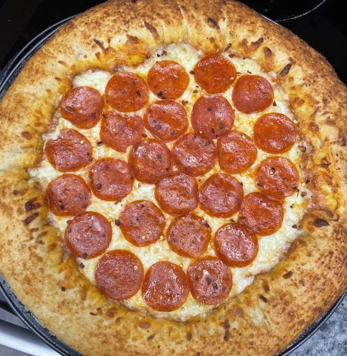

Pizza Dough

Description
A tasty, modifiable, quick rising pizza dough perfect for home made pizza in an hour (maybe plus five minutes) including
cool time! Made to taste complimentary and hold together well and is great for any kind of pan or stuffed crust pizza!
Ingredients
- 2 cup flour
- 2 1/2 tsp yeast
- 1 1/2 tsp sugar
- 1 tsp salt
- 1/2 tsp garlic powder
- 1/2 tsp dried basil
- 2 tbs olive oil (plus for bowl and pan)
- 3/4 cup warm water
Steps
- Preheat oven to 375 degrees (F).
- Mix sugar and yeast with warm water in bowl and let sit until activated (3-5 minutes), and a layer of foam will form.
- Thoroughly mix 1 cup flour and remaining dry ingredients.
- Add olive oil and the yeast mixture and stir thoroughly adding additional cup of flour over time, works well with wooden spoon.
- Brush large glass bowl with olive oil.
- Lightly dust hands with flour and kneed dough into round ball and transfer to oil brushed bowl and place bown on stove (not burner).
- Cover bowl with clean cloth and let rise for 25 minutes, flip gently, and allow 15 more minutes to finish rising.
- Brush pizza pan with oil.
- Gently kneed/roll out dough onto brushed pizza pan until desired size (12/14in).
- Add pizza sauce and/or toppings.
- If desired, melt additional 2-3 tbs butter, 1 tbs garlic powder, and 1 tbs dried basil together and baste crust with mixture.
- Cook ~12-15 minutes, or until desired crust color/cheese consistency.